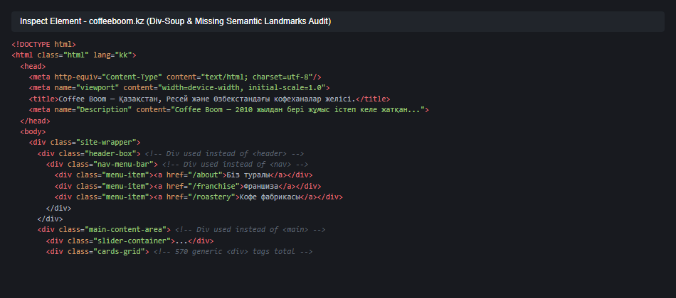
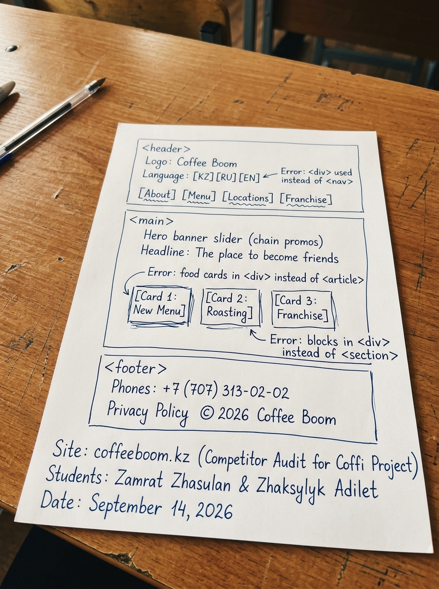
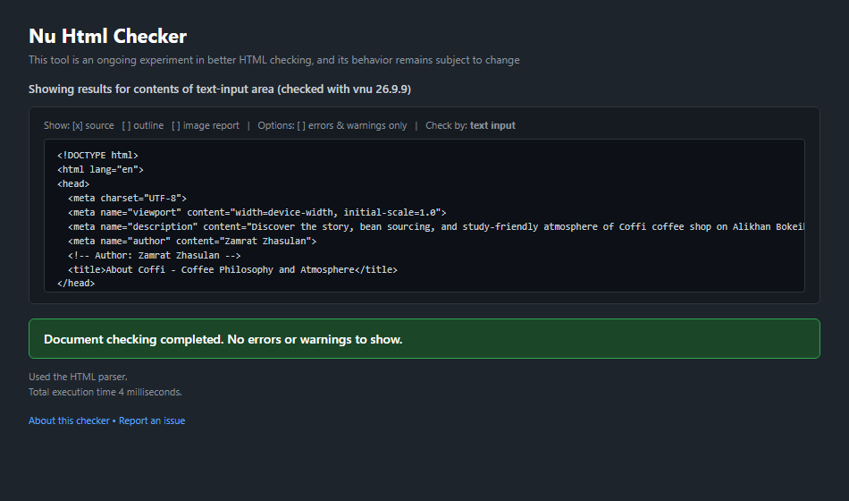
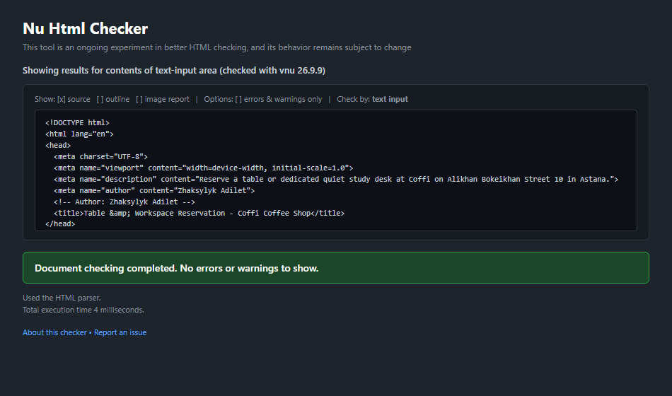
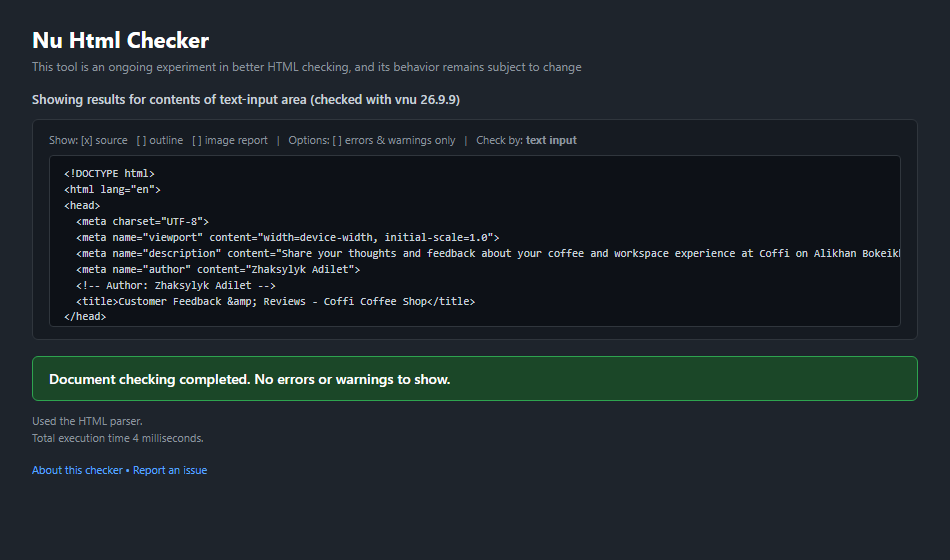
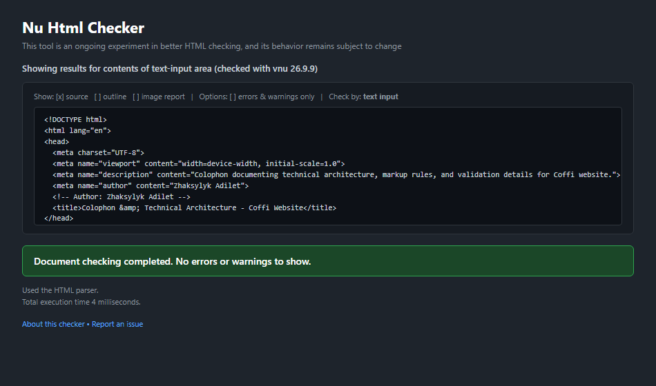

<header>, <nav>, <main>, <footer>).border="1" or align).<table>, <caption>, <thead>, <tbody>, and th scope).<fieldset>, <legend>), and native HTML5 validation constraints across two functional forms.<!DOCTYPE html>lang="kk" in <html class="html" lang="kk"><meta http-equiv="Content-Type" content="text/html; charset=utf-8"/><meta name="viewport" content="width=device-width, initial-scale=1.0">Coffee Boom — Қазақстан, Ресей және Өзбекстандағы кофеханалар желісі.<meta name="Description" content="Coffee Boom — 2010 жылдан бері жұмыс істеп келе жатқан, 130-дан астам кофеханасы бар халықаралық желі..."><meta name="theme-color" content="whitesmoke"><meta property="og:image" content="https://coffeeboom.kz/wa-data/public/wcms/images/07/04/00/461/461.0x0.png">
| Element Type | Tag Name | Occurrence Count | Status / Evaluation |
|---|---|---|---|
| Semantic Header | <header> |
1 | Present for brand banner |
| Semantic Navigation | <nav> |
0 | Severe issue: navigation wrapped only in generic divs |
| Sectional Grouping | <section> |
0 | No thematic section tags used |
| Independent Article | <article> |
0 | Blog/magazine articles use plain divs |
| Complementary Aside | <aside> |
0 | No peripheral landmarks |
| Data Tables | <table> |
0 | No structured tables for menu or branch data |
| Generic Containers | <div> |
570 | Excessive div-soup throughout entire layout |
1. Extreme "Div-Soup" and Missing Navigation Landmarks:
coffeeboom.kz, the main navigation bar containing over 20 links is wrapped in generic <div> tags rather than a semantic <nav>. Screen readers and search engine crawlers cannot identify navigation landmarks.index.html, about.html, menu.html, booking.html, feedback.html, colophon.html), site navigation is strictly encapsulated in a semantic <nav> tag holding a structured <ul> list.2. Missing Label Associations and Grouping in Forms:
<label for="..."> tags, causing screen readers to fail when identifying input targets.booking.html and feedback.html, every input has an explicit label, and inputs are partitioned into logical <fieldset> containers with <legend> headers.3. Absence of Accessible Tables for Tabular Information:
<table> elements), making data extraction inaccessible for assistive tools.menu.html, we implemented an accessible <table> complete with <caption>, <thead>, <tbody>, and explicit scopes (scope="col", scope="row").As required by Assignment 1, the page structure of the audited reference website was analyzed and hand-drawn on paper with a blue ballpoint pen, highlighting semantic errors and signed by both students.

A web page is fundamentally a plain-text document structured with HyperText Markup Language (HTML). At its core, an HTML file consists of human-readable elements demarcated by tags, attributes, text nodes, and entities. When a user navigates to a local HTML file or web address, the browser receives a continuous stream of raw bytes.
The rendering engine decodes these bytes into characters using the declared character encoding (UTF-8), tokenizes the stream into distinct start tags, end tags, and content, and constructs the Document Object Model (DOM) tree. Concurrently, the engine parses external stylesheets to generate the CSSOM (CSS Object Model). The browser merges DOM and CSSOM into a Render Tree, filtering out non-rendered nodes (such as <head> or elements with display: none). Next, the layout engine executes geometry calculations to determine the precise size and coordinates of each element on the viewport. Finally, the painting stage rasterizes vectors, text, borders, and colors onto physical pixels displayed on the screen. Because our assignment strictly excludes CSS and JavaScript, the browser renders directly using its default User-Agent stylesheet.
In my codebase, I strictly prioritized semantic markup over generic <div> containers:
menu.html, I wrapped our pricing data inside an accessible <table> with <thead> and <tbody> instead of styled grid divs, giving assistive screen readers clear tabular data relationships.menu.html, I utilized a definition list (<dl>, <dt>, <dd>) instead of divs to define specialty coffee terms (Single-Origin, Bumble Coffee, Micro-foam) as term-and-description semantic pairs.about.html, I chose <article> instead of <div> for the community workspace narrative because it forms an independent, self-contained story that can stand on its own.A web page is a structured text document containing semantic tags that define document landmarks, interactive forms, and content hierarchies. When a browser opens our booking.html file, it parses the markup from top to bottom, building an in-memory tree representation known as the DOM (Document Object Model). Without external CSS, the browser applies its built-in user-agent style sheet to compute font sizes, element margins, and form control layouts before painting pixels to the display.
In my codebase, I strictly chose semantic elements over non-semantic <div> tags:
booking.html, I grouped personal contact details and dining preferences inside <fieldset> elements with <legend> rather than wrapper divs, ensuring screen readers announce logical category contexts.feedback.html, I explicitly connected each <label for="..."> with its corresponding input id instead of using generic divs with text, ensuring clicking labels activates input focus.colophon.html, I used <pre> and <code> instead of a div container to display sample HTML code while preserving whitespace and formatting.When a visitor clicks the submit button on booking.html today, the browser triggers native client-side constraint validation against attributes like required, type="email", type="number", and type="tel". If any input fails validation, the browser blocks submission and displays a native alert. Because no server-side backend script processes the request, the browser attempts an HTTP POST request to action="#", reloading the static page with query fragment without transmitting data over the network.
Interactive logs documenting prompt history, academic integrity declarations, and AI-assisted workflow iterations are maintained in the GitHub repository:
All six project documents were submitted to the official W3C Nu HTML Validator, passing with zero errors and zero warnings.




The comprehensive line-by-line checklist of every required HTML5 semantic tag, attribute, list, and table structure with student attributions is documented in the repository:
URL: https://github.com/jasulansam/web/blob/main/tag-checklist.md